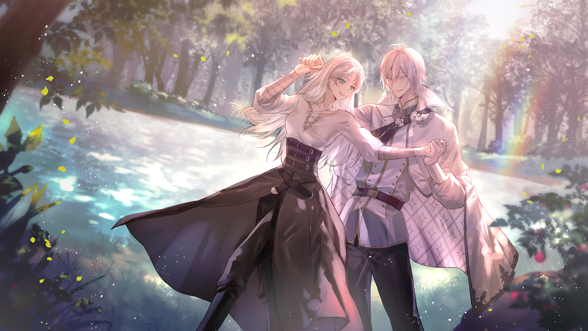

The Dream where I met You
Silver Vanrouge X Ikuyo Tsukinoki
個人夢向網站 by 凍檸茶

此網站為本人在Twisted Wonderland的女監督生與Silver的個人夢向網站
網站內所有圖片、角色、設定皆為Twisted Wonderland官方所有，僅用於個人夢向創作
不要拿我的圖片及內容，但可以拿我的code
Thanks to:
米米克, KCN, 411cm, nel_kim_
李檸之, Reika, 摸謎, Pink Up
末形未, 梢, Arisa